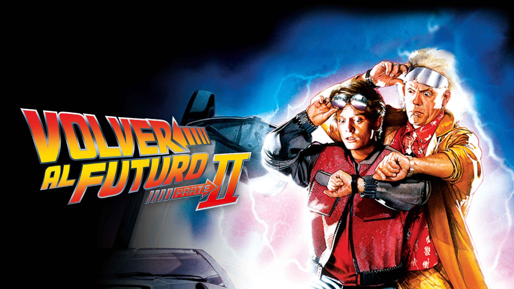
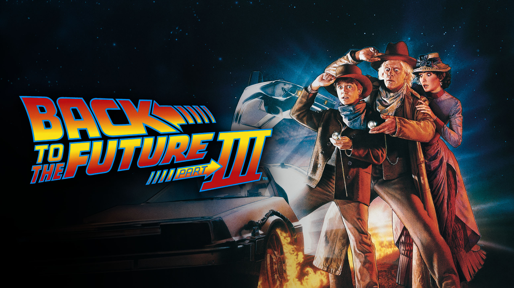

La expansión del universo
Tras el rotundo éxito de la primera entrega, Zemeckis y Bob Gale expandieron la historia con dos secuelas filmadas simultáneamente, un hito para la época que permitió mantener la cohesión visual y narrativa de la saga.
Back to the Future Part II (El Futuro y el Caos):

Back to the Future Part III (El Cierre en el Oeste):

Mientras que la primera película es una aventura de descubrimiento y la segunda es un rompecabezas lógico sobre las paradojas temporales, la tercera funciona como una resolución emocional.
El contraste entre el brillo neón del futuro y el polvo del desierto de 1885 demuestra la versatilidad de la saga, manteniendo siempre el mismo corazón:
la idea de que el futuro es lo que uno hace de él.